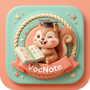

VocNoteA calm notebook for learning English vocabulary.
Questions, bugs, feedback, or a request to delete your data — email us and we’ll get back to you:
Do I need an account?
No. VocNote works fully offline without an account. Sign in only if you want to
sync across devices with VocNote Cloud (a Premium feature).
What is VocNote Premium?
A one-time purchase that turns off ads, unlocks cloud sync across your devices,
keeps a safe backup, and gives priority access to new features.
I bought Premium but it’s not showing.
Open Settings and tap Restore purchase on the Premium screen. If it
still doesn’t appear, email us with your Apple ID region and we’ll help.
How do I back up or move my words?
Use Export in Settings to save your words as a JSON or CSV file, and Import to
bring them back or move them to another device.
How do I delete my account and cloud data?
Open Settings in the app and tap Delete account at the foot of your
profile. This permanently removes your account and everything synced to it (the
words on your device stay). You can also email us and we’ll delete it for you.
How do I turn crash reporting on or off?
Settings › Diagnostics. It is off by default.
See also our Privacy Policy.